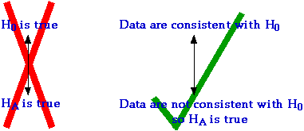

Symmetric hypotheses
In some situations there is a kind of symmetry between the two competing hypotheses.
The sample data provide information about which of the two hypotheses is true.
Election poll
Two candidates, Mike Smith and Sarah Brown, stand for election as president
of a student council. Four days before the election, the student newspaper asks
56 randomly selected students about their voting intentions. If the proportion
intending to vote for Mike Smith is denoted by π,
the hypotheses of interest are
| H0 : |
π > 0.5 |
| HA : |
π < 0.5 |
The diagram below illustrates how the poll results might weigh the evidence
for each candidate winning.
Drag the slider to see how different sample numbers choosing
Mike Smith affect the evidence. Unless either candidate receives (say) three quarters
of the sample vote, we should admit that there is some doubt about who will win
— the sample may not accurately reflect the population proportions.
Null and alternative hypotheses
In statistical hypothesis testing, the two hypotheses are not
treated symmetrically in this way. We must distinguish in a much more fundamental
way between them.
In statistical hypothesis testing, we do not
ask which of the two competing hypotheses is true.
Instead, we ask whether the sample data are consistent with one particular
hypothesis (the null hypothesis, denoted by H0).
If the data are not consistent with the null hypothesis, then we can conclude
that the competing hypothesis (the alternative hypothesis, denoted
by HA) must be true.

This distinction between the hypotheses is important. Depending on the sample
data, it may be possible to conclude that HA is true. However,
regardless of the data, the strongest we can say supporting H0
is that the data are consistent with it.
We can never conclude that H0 is
likely to be true.
Memory test and exercise
Forty students in a psychology class are given a memory test. After a 30-minute
session where the students undertake a variety of physical exercises, the students
are given another similar memory test.
Has exercise has affected memory? The data are paired, so we analyse the difference
in test results for each student ('after exercise' minus 'before exercise') and
test whether the underlying population mean of these values is zero.
| null hypothesis H0 : |
µ = 0 |
| alternative hypothesis HA : |
µ ≠ 0 |
The diagram below illustrates the evidence obtained from a set of sample data.
Drag the slider to see the conclusions that might be reached for
data sets with different means. The further the sample mean is from zero (on either side), the
stronger the evidence that
µ is
not zero.
We can get very strong evidence that H0
does not hold if the sample mean is far from zero.
However even  = 0
does not provide strong evidence that µ = 0
= 0
does not provide strong evidence that µ = 0
If = 0,
µ
could just as easily be 0.0001 or -0.0002 (which correspond to HA).
We cannot distinguish, so the best we can say is that the data are consistent
with the null hypothesis — the data provide no information against the µ
being zero.
In the context of this example, the conclusion from a sample mean of zero would
be that the experiment gave no evidence that exercise affected
memory. Exercise might affect memory, but the experiment did
not detect the effect.
The distinction between the null and alternative hypotheses is so important
that we repeat it below.
We never try to 'prove' that H0 holds, though we may be able to 'prove' that HA holds.